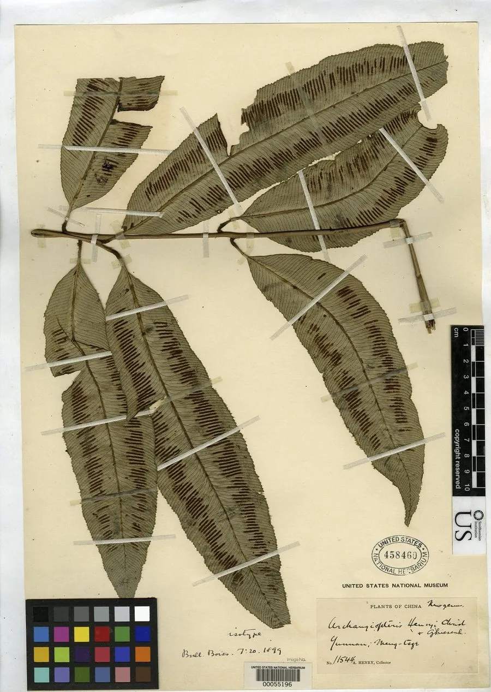

蕨类与裸子植物 · 植物界
二回原始观音座莲 Archangiopteris henryi

合囊蕨科原始观音座莲属大型蕨类，叶为二回羽状、叶脉分离，生于云南与越南北部的沟谷雨林，是珍稀孑遗蕨类。
- 分类
- 门蕨类植物门纲合囊蕨纲目合囊蕨目科合囊蕨科属原始观音座莲属
- 栖息环境
- 海拔 500–1200 米的热带沟谷雨林林下阴湿处，喜温暖湿润、半阴
- 地理分布
- 中国云南东南部与越南北部，分布区狭窄
- 保护级别
- IUCN 暂无评估；分布区狭窄，野生种群稀少，需重点保护
物种志
二回原始观音座莲为大型陆生蕨类，高 1–2 米，具粗壮肉质根状茎。叶柄基部膨大、肉质，叶为二回羽状，长 1.5–2.5 米，小羽片披针形，边缘具锯齿，叶脉分离。孢子囊群长圆形，沿小脉着生，成熟时褐色。
本种分布于中国云南东南部与越南北部的热带沟谷雨林，生于海拔 500–1200 米的林下阴湿处，喜温暖湿润、半阴的环境。原始观音座莲属是合囊蕨目中较为原始的类群，叶脉分离、孢子囊群结构简单，对研究蕨类系统演化具有重要价值。它的野生种群十分稀少，分布区狭窄，受森林砍伐与生境破坏威胁。栽培需高湿、半阴与疏松肥沃的酸性土壤。
形态与习性
- 株高1–2 米，根状茎粗壮肉质
- 叶二回羽状，长 1.5–2.5 米
- 叶脉分离，不形成网状脉
- 孢子孢子囊群长圆形，沿小脉着生
- 光照喜半阴，忌强光直射
- 水分喜高湿，沟谷环境生长良好
- 主要用途蕨类演化研究与种质保护
趣味知识
- 原始观音座莲属的叶脉分离，保留了合囊蕨类较为原始的特征。
- 它的分布仅限云南东南部与越南北部的狭窄区域，野生植株很少。
- 二回原始观音座莲的叶柄基部同样膨大，但比观音座莲属更细。
- 它被蕨类学者视为研究合囊蕨目演化的关键材料。